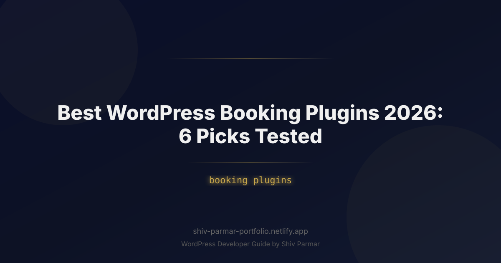

Best WordPress Booking Plugins 2026: 6 Picks Tested | Shiv Parmar
Table of Contents
In 2026, the friction between discovering a service and confirming a paid consultation or appointment should be practically zero. Yet, thousands of businesses continue to leak qualified leads through cumbersome back-and-forth email threads, mismatched time zones, and outdated scheduling forms. If your site takes more than three clicks to schedule and confirm an appointment, your prospective clients are simply moving down the search engine results page to a competitor who respects their time.
The software landscape has shifted dramatically over the past few years. Standalone SaaS tools like Calendly and Acuity continue to raise their subscription prices while locking your valuable customer booking data inside walled gardens. Meanwhile, WordPress booking plugins have evolved from clunky, shortcode-ridden forms into robust, headless-ready scheduling platforms with native payment orchestration, two-way API calendar syncing, and automated multi-channel client communications.
To identify the top performers for modern digital agencies, service providers, and multi-location businesses, we put dozens of scheduling extensions through their paces. We evaluated front-end rendering performance, database query impact, customizability, payment gateway integration, and real-world stability. Here is our comprehensive, data-backed analysis of the six best WordPress booking plugins you should deploy in 2026.
What is a WordPress Booking Plugin?
A WordPress booking plugin is a purpose-built software extension that transforms a dynamic or static WordPress site into an interactive reservation and appointment engine. Unlike a generic contact form plugin—which merely collects inputs and dispatches an email—a dedicated booking engine features complex business logic running directly on your server or via secure REST APIs.
At its core, a complete WordPress booking solution coordinates several interdependent processes in real time:
- Availability Computation: It calculates available time slots dynamically by cross-referencing staff working hours, scheduled breaks, holidays, buffer times, and third-party calendar availability (Google Calendar, Outlook, Apple iCloud).
- Capacity and Resource Management: It prevents overbooking by reserving equipment, rooms, or specific staff members simultaneously across multiple service tiers.
- Payment Orchestration: It collects upfront deposits, full payments, or pre-authorizations directly at the moment of reservation using processors like Stripe, PayPal, Square, or WooCommerce.
- Transactional Messaging: It automates the distribution of client notifications, calendar invitations (.ics files), SMS updates, and custom webhook payloads to CRMs and external analytics platforms.
- Customer Self-Service: It provides a portal where customers can reschedule, modify, or cancel appointments based on predefined rules without requiring manual intervention from your support staff.
Why Automated WordPress Booking Matters in 2026
The economics of running a service business online have fundamentally changed. Relying on manual scheduling or rigid off-site iframes introduces unnecessary drop-off points. Running your appointment architecture directly inside WordPress offers distinct strategic advantages:
First, owning your infrastructure eliminates the "platform tax." If your business manages 500 appointments a month across ten employees, third-party SaaS scheduling platforms can easily cost upwards of $100 to $250 every month. A self-hosted WordPress plugin typically relies on an affordable annual license, saving your operational budget thousands of dollars per year while scaling without arbitrary per-user or per-booking fees.
Second, user privacy and regulatory compliance (such as GDPR, CCPA, and HIPAA) require strict governance over personally identifiable information (PII). When booking patients, legal clients, or enterprise buyers, passing private data to third-party scheduling companies increases your security liability. By controlling your WordPress database, you retain full ownership of customer records, transaction histories, and internal staff schedules.
Finally, modern consumer expectations demand absolute speed. In 2026, Core Web Vitals, headless front-ends, and mobile payment standards (Apple Pay, Google Pay) dictate conversion rates. Modern WordPress booking plugins now ship with lightweight reactive front-ends (built on Vue or React) that render appointment pickers in milliseconds without triggering full-page reloads, directly translating to higher conversion rates across mobile and desktop environments.
Step-by-Step Guide: The 6 Best WordPress Booking Plugins Tested
We installed, configured, and stress-tested the top contenders on clean WordPress staging environments running PHP 8.3 and MySQL 8.0. Below is an architectural breakdown of the six best plugins available today, including their performance metrics and optimal use cases.
| Plugin | Ideal Use Case | Calendar Sync | Payment Gateways | Pricing Model |
|---|---|---|---|---|
| Amelia | Salons, Spas, Enterprise Teams | 2-way (Google, Outlook) | Stripe, PayPal, Mollie, Razorpay | Annual & Lifetime |
| LatePoint | High-Performance, Custom UX | 2-way (Google, Outlook) | Stripe, PayPal, Square, BrainTree | Annual Subscription |
| Bookly Pro | Modular Stacks, High Volume | 2-way (Google, Outlook) | 10+ Gateways (via Add-ons) | One-time base + Paid Add-ons |
| Simply Schedule Appointments | Solopreneurs, Fast Deployment | 2-way (Google Calendar) | Stripe, PayPal | Annual Subscription |
| WooCommerce Bookings | E-commerce & Inventory Hybrids | 2-way (Google Calendar) | All WooCommerce Gateways | Annual Subscription |
| WP Simple Booking Calendar | Vacation Rentals, Daily Bookings | iCal Import/Export | None (Availability only) | Freemium / Low Annual |
1. Amelia: The Polished Enterprise Powerhouse
Amelia stands out as one of the most visually refined booking plugins in the WordPress ecosystem. Designed specifically for appointment-driven service industries such as medical clinics, beauty salons, fitness centers, and consulting agencies, Amelia provides an out-of-the-box user experience that rivals high-end SaaS applications.
The interface is built on Vue.js, ensuring that navigation between service selections, employees, calendar dates, and payment screens occurs instantly without triggering browser page refreshes. In our tests, Amelia's database structure held up exceptionally well when loaded with 50+ staff members and over 1,000 monthly bookings.
Key Strengths:
- Includes interactive administrative dashboards showing KPI metrics, revenue figures, and employee conversion rates.
- Native support for group bookings, multi-day recurring appointments, and virtual event links via Zoom and Google Meet integrations.
- Deep integration with WhatsApp and SMS gateways for high-open-rate transactional updates.
Amelia provides broad support for front-end events, allowing developers to inject custom analytics scripts into the scheduling process. For instance, you can capture confirmed bookings and send conversion payloads to your marketing trackers using standard JavaScript event listeners:
window.addEventListener('ameliaBookingSuccessful', function(event) {
// Access the Amelia booking payload
const bookingData = event.detail;
console.log('Booking confirmed for service ID:', bookingData.serviceId);
// Dispatch custom conversion event to Google Tag Manager / Analytics
if (typeof window.dataLayer !== 'undefined') {
window.dataLayer.push({
event: 'appointment_booked',
service_name: bookingData.service.name,
total_price: bookingData.price,
booking_id: bookingData.id
});
}
});2. LatePoint: The Modern Developer’s Benchmark for Speed
LatePoint was built from the ground up to solve the bloat found in older legacy plugins. If performance, clean code architecture, and a modular setup are your top priorities, LatePoint is arguably the most capable booking system on the market today. It avoids heavy third-party CSS frameworks and loads only the assets required on the specific page the user is viewing.
The customer experience is clean, modern, and app-like. The checkout workflow guides the user through staff selection, service picking, and date reservation with zero visual clutter. LatePoint also shines behind the scenes with a clean, decoupled code structure that makes it simple to extend using standard WordPress filters and actions.
Key Strengths:
- Exceptional performance metrics with negligible impact on page load times and Core Web Vitals.
- Built-in customer dashboard allowing clients to manage their appointments, view receipts, and update account details with secure passwordless login.
- Native add-on ecosystem that keeps the core plugin lightweight, allowing you to activate only the features you need (e.g., taxes, custom fields, SMS).
Extending LatePoint is straightforward. The following code snippet demonstrates how to hook into LatePoint’s appointment creation process to programmatically fire a webhook payload to an external CRM endpoint whenever a booking is created:
add_action('latepoint_booking_created', 'dispatch_booking_to_crm', 10, 1);
function dispatch_booking_to_crm($booking) {
$endpoint = 'https://api.yourcrm.com/v1/appointments';
$payload = array(
'external_id' => $booking->id,
'customer_name' => $booking->customer->full_name,
'customer_email'=> $booking->customer->email,
'customer_phone'=> $booking->customer->phone,
'booking_date' => $booking->start_date,
'start_time' => $booking->start_time,
'service_id' => $booking->service_id,
'total_amount' => $booking->price
);
wp_remote_post($endpoint, array(
'method' => 'POST',
'timeout' => 15,
'headers' => array(
'Content-Type' => 'application/json',
'Authorization' => 'Bearer YOUR_SECURE_TOKEN'
),
'body' => json_encode($payload),
'data_format' => 'body'
));
}3. Bookly Pro: The Veteran with Granular Modular Control
Bookly is an established name in the WordPress booking space, powering over 60,000 active installations worldwide. If your business model involves complex staff hierarchies, irregular shifts, physical locations across time zones, or hyper-specific payment configurations, Bookly Pro’s granular options can handle nearly any structural requirement.
The system operates on an a la carte model: you purchase the core Bookly Pro plugin, and then expand its capabilities via dozens of specialized extensions (e.g., custom duration add-on, staff cabinet add-on, service extras add-on). This modular approach lets you construct a tailored workflow without maintaining unnecessary codebase features.
Key Strengths:
- High degree of flexibility across staff schedules, custom breaks, localized holiday calendars, and individual commission calculations.
- Multi-step booking wizard with a customizable design that adapts smoothly to mobile viewports.
- Robust translation and localization support, making it well-suited for international operations.
4. Simply Schedule Appointments (SSA): Accessible and Client-Focused
Simply Schedule Appointments focuses on eliminating the technical friction often associated with WordPress scheduling. If you need a stable, accessible booking engine that can be set up in under 15 minutes, SSA is one of the most reliable options available.
SSA is particularly strong in usability and compliance. It strictly adheres to accessibility guidelines (WCAG 2.1 AA), ensuring that visitors with visual impairments or motor limitations can navigate the appointment workflow via screen readers and keyboard controls without roadblocks. For public sector, legal, medical, and education sites, this accessibility is a significant operational advantage.
Key Strengths:
- Top-tier customer support combined with an intuitive setup wizard that guides non-technical users through the setup process.
- Deep, native integrations with page builders including Elementor, Beaver Builder, and the native WordPress Block Editor (Gutenberg).
- Seamless two-way sync with Google Calendar that reliably catches and prevents double-booking events.
5. WooCommerce Bookings: The E-Commerce Hybrid Choice
When appointments or reservations need to live alongside an existing inventory of digital or physical products, WooCommerce Bookings remains the industry standard. Developed to extend the core WooCommerce system, this plugin turns bookable slots into distinct product types.
This architecture is a major asset if your business model blends services and products. For example, a photography studio can charge for a two-hour session, upsell framing or studio equipment rentals, apply WooCommerce coupons, collect custom sales tax through automated engines like Avalara, and funnel everything through a single unified checkout flow.
Key Strengths:
- Direct integration with the broader WooCommerce ecosystem, unlocking access to hundreds of payment gateways, tax calculation engines, and shipping extensions.
- Supports both fixed-interval time blocks (e.g., an exact 45-minute consultation) and flexible customer-defined slots (e.g., renting an event hall for 3 days).
- Advanced deposit workflows when paired with the WooCommerce Deposits extension.
6. WP Simple Booking Calendar: Specialized for Rentals and Daily Availability
Not every service requires hourly scheduling or complex staff assignment. If you operate a bed-and-breakfast, vacation rental property, equipment yard, or venue space, hourly booking engines add unnecessary friction. WP Simple Booking Calendar is built specifically for daily and per-night reservations.
The plugin focuses on doing one thing well: displaying clear availability calendars to site visitors. It lets users see which days are booked, reserved, or open at a glance, without forcing them through an elaborate multi-step checkout workflow if you prefer handling the final terms manually.
Key Strengths:
- Extremely lightweight with minimal impact on your database or asset loading overhead.
- Reliable iCal synchronization, allowing you to keep WordPress availability synchronized with platforms like Airbnb, VRBO, and Booking.com.
- Clean visual presentation that can be customized to match any theme styling without writing complex CSS overrides.
Best Practices for Implementing WordPress Booking
Deploying a WordPress booking plugin requires more care than setting up a simple blog or portfolio site. Booking engines generate dynamic data that interacts directly with database tables, session handlers, and external APIs. Keep the following technical best practices in mind to maintain a stable, high-converting setup:
1. Exclude Dynamic Scheduling Pages from Page Caching
Aggressive server-level caching solutions (like Varnish, Nginx FastCGI Cache, LiteSpeed, or plugins like WP Rocket) are vital for performance. However, caching a page that displays real-time slot availability will show stale booking data to your visitors, leading to double bookings and payment errors.
Always configure your caching layer to bypass URLs containing your booking wizards and checkout pathways. For Apache or Nginx environments using file-based or object-based caching, define explicit bypass rules for endpoints like:
/appointments/*
/booking/*
/account/*
/checkout/*Additionally, verify that your booking plugin passes the appropriate HTTP headers (Cache-Control: no-cache, must-revalidate, max-age=0) on all dynamic scheduling screens to prevent proxy caches and browser-level caching from returning stale slots.
2. Offload Transactional Emails to a Dedicated SMTP Provider
Default WordPress transactional emails rely on the server's local PHP mail() utility. This setup is notorious for poor deliverability, frequently causing booking confirmations, calendar invites, and payment receipts to land in spam folders or get dropped entirely.
Never rely on default PHP mail for production booking environments. Route your communications through an enterprise SMTP relay or transactional API provider such as Postmark, SendGrid, or Amazon SES using plugins like FluentSMTP. This ensures near-instant delivery of verification pins, meeting links, and calendar updates.
3. Use Redis or Memcached for Persistent Object Caching
Booking calculations involve multiple relational queries across staff schedules, working hours, appointments, and custom date buffers. Executing raw SQL queries on every page hit can slow down your database server during traffic spikes.
Implementing a persistent object cache via Redis stores the results of these complex availability computations in memory. This reduces database overhead, keeps TTFB (Time to First Byte) low, and ensures your booking engine remains responsive even under heavy traffic.
Common Mistakes to Avoid
Even seasoned WordPress developers can run into issues when setting up complex scheduling systems. Avoid these frequent pitfalls to keep your booking system running smoothly:
1. Misconfiguring Time Zones and Daylight Saving Time Rules
Time-zone mismatches are among the most common technical issues in online scheduling. If your WordPress core time zone is set to a static UTC offset (such as UTC+2) rather than a geographic city identifier (such as Europe/Paris or America/New_York), your system will not account for Daylight Saving Time transitions automatically.
When this happens, your staff's synced calendars and your front-end booking forms will fall out of sync by exactly one hour twice a year. Always configure your WordPress environment under Settings > General using dynamic timezone locations rather than manual UTC offsets, and verify that your server’s internal clock uses NTP synchronization.
2. Overbooking Caused by Asynchronous iCal Polling
Many businesses rely on basic iCal URLs to synchronize WordPress with external services like Google Calendar or Airbnb. However, standard iCal feeds are typically refreshed asynchronously on an hourly or daily schedule—not in real time.
If a client books a slot directly on your Google Calendar, a WordPress booking system relying on basic iCal polling may not register that block for hours, leaving the slot open on your website and risking double bookings. For mission-critical scheduling, always select plugins that support native, two-way API integrations (via Google Cloud Console OAuth2 and Microsoft Graph API) with real-time webhooks rather than passive iCal pulling.
3. Omitting Automated SMS and WhatsApp Reminders
Relying solely on email notifications can lead to high client no-show rates. Open rates for transactional emails often hover around 30-40%, whereas SMS and WhatsApp messages consistently achieve open rates above 90%.
Failing to implement SMS or instant messaging gateways can directly impact your bottom line. Choose a booking solution with built-in SMS capabilities (via providers like Twilio) and schedule automated reminders at the 24-hour and 1-hour marks prior to the appointment. This simple workflow can reduce missed appointments by more than half.
4. Cluttering the Initial Step with Too Many Form Fields
A booking form is fundamentally a sales funnel. Every additional form field you require before confirming the time slot increases user friction and raises abandonment rates. Many businesses make the mistake of demanding full billing addresses, detailed intake questionnaires, and multiple phone numbers on the very first screen.
Keep your initial booking flow as simple as possible: collect only the client's first name, email address, and payment details if required. If you need extensive intake information, direct users to a custom intake form on the confirmation screen or include it in an automated follow-up email. Getting the appointment secured on the calendar first should always be your top conversion priority.
Conclusion
Choosing the right tool to manage your schedule in 2026 ultimately comes down to your business model, budget, and desired user experience. Whether you operate a fitness studio, run a consulting firm, or offer home services, automating your appointments eliminates back-and-forth communication and minimizes no-shows. Each of the six booking plugins we tested brings distinct strengths to the table, ranging from lightweight, plug-and-play calendar forms to enterprise-grade platforms packed with automated notifications and payment gateway integrations.
However, getting the most out of your WordPress booking system often requires more than just installing an extension. Ensuring smooth payment processing, styling the booking interface to match your branding, and connecting your calendar with external CRMs or marketing tools are critical steps to building a seamless workflow that converts visitors into paying clients.
If you need expert assistance configuring your setup or developing custom functionality, Shiv Parmar is available for WordPress development work worldwide. From fine-tuning complex scheduling flows to building high-converting websites from scratch, Shiv can help you create a fast, reliable booking experience tailored specifically to your business goals. Reach out today to discuss your next project.
Frequently Asked Questions
Which WordPress booking plugin is the best choice in 2026?
There is no single winner for every business. Amelia is the most polished all-in-one option for service companies, LatePoint is the fastest modern admin experience, Bookly Pro offers the most granular modular control, and Simply Schedule Appointments is the most accessible for client-facing scheduling. WooCommerce Bookings makes sense only if you already run a store, while WP Simple Booking Calendar is a lightweight pick for rental and daily availability calendars.
How do I keep my booking plugin from breaking under caching?
Dynamic scheduling, cart, and checkout pages must be excluded from page caching so availability and time slots are never served stale. The guide also recommends offloading booking confirmation emails to a dedicated SMTP provider and using Redis or Memcached for persistent object caching. Purge every cache layer after you change your booking configuration.
Why does my booking calendar allow double bookings?
The most common cause is asynchronous iCal polling: external calendars sync on an interval, so two guests can reserve the same slot between syncs. Time zone and daylight saving time misconfigurations also shift available windows without warning. Prefer the plugin's internal database-backed availability checks for real-time slots and use iCal only to mirror external calendars.
Do I need WooCommerce to accept booking payments?
No. Amelia and Bookly Pro include their own payment gateway integrations, so you can collect deposits or full payment during the booking flow without running a store. WooCommerce Bookings is the better fit when your site already sells products, because bookings, cart, and stock stay in one system. WP Simple Booking Calendar stays focused on availability and does not process payments.